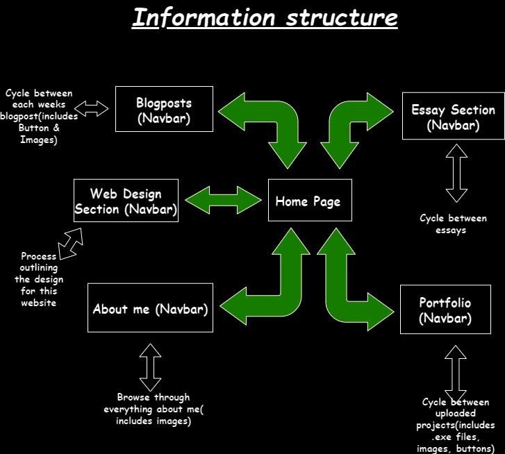
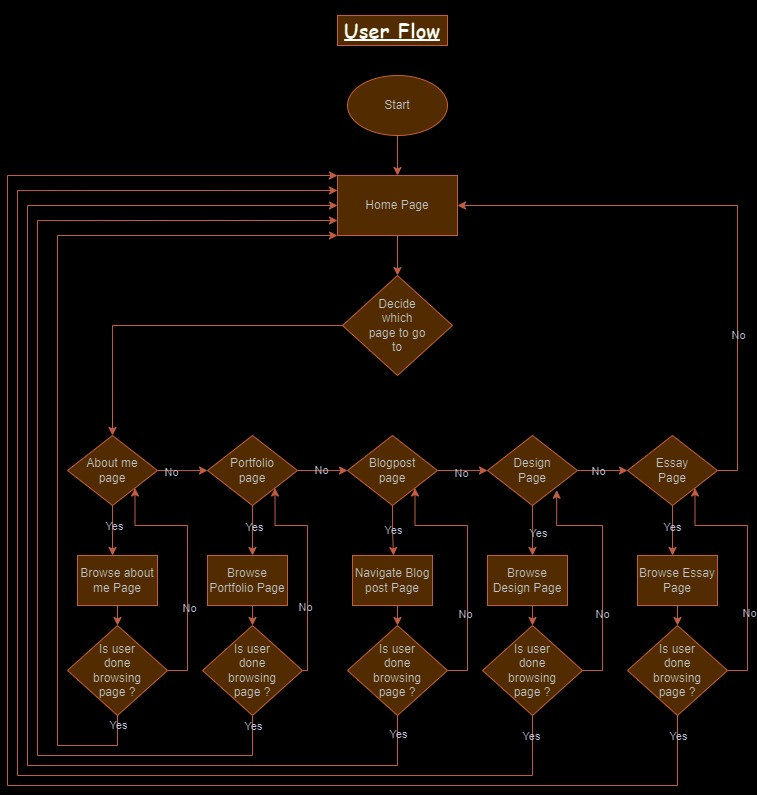

Setting up github and my page was fairly straightforward. I had previously used github for a few of my projects hence the reason for it being straightforward.I am also comfortable with using branches, so if I ever need to do something very specific so if I ever need to do something very specific for my site I can certainly break down my work, and push to the necessary branches if need be.
For this week, I have decided to choose the reading "As we may think" by Simon Harper. I found this to be quite an interesting read. As
I began reading I came across something which I previously did not know about, and that is Differential analyser. Which I did some research
on and the main thing that stood out to me was the way that the analyser worked and how well all the inter connected parts worked in sync.
More than that, I found that Bush's inability to conform to the current digital technologies at the time was more interesting to me. As his
position posed many questions. What is that he see's in his system, so much so that he has closed the book on current digital technologies
at the time ? Well, to my understanding I see the light in his position with regards to the idea of association. When I think about the
nature of this course, I realise that it's largely encompassed beyond mere search engines. It certainly filled with information, and looking
back on Bush's idea of assocation we to need ways of understanding this information in by the World Wide Web. Which goes far different ways.
I will attempt to lean into something I believe that could certainly tie into this idea of assocation. My understanding goes back to something
I learnt in my first year of study. Which was the semiotic approach by Ferdinand de Saussure, where the approach saw languages as systems of signs.
From what I understand this information presented to us on the Web, a large part of this is due to way the semiotics work. In essence, Information
is being presented to us, we have our own way of understanding that information. Through the conventions and the perceptions we have formed and have come to experience.
It was invented for scientists !!!
With some of my previous knowledge on building games I am fully aware that organizing my project is like laying the groundwork for a building; it needs to be robust and well-planned. I've opted for a clear and intuitive folder structure that ensures easy navigation for both development and future updates. Each section of my website has its dedicated folder, and I've incorporated a logical URL scheme that reflects the content hierarchy. My overall folder structure not only facilitates easy navigation during development but also sets a solid foundation for future scalability and makes the processing of updating my website much easier. This will not only streamline the development process for me but also enhances user experience.
I based my decisions on the simplicity and scalability of the structure. A well-organized folder system not only aids in development but also facilitates content updates without causing chaos. The URL scheme, being an extension of this, contributes to creating user-friendly and easily shareable links.
In these early stages, I'm focusing on the fundamental elements – navigation, content placement, and user interaction. The wireframes serve as a blueprint, helping me conceptualize the user journey and fine-tune the design before delving into the intricacies of coding with HTML.
Before I began designing my UI wireframes, I thought about how I would like my website to look. I then researched
further and found out that each section of a web page is defined by specific sections, which have specific names. E.G The hero section - A
prominent and visually striking section at the top of a webpage. It is one of the first elements that users see when they land on a website,
typically occupying a large portion of the screen. The hero section serves as a crucial introduction, capturing the attention of visitors
and conveying key messages about the website or brand.
With the image I had in mind combined with my new found knowledge of the specific sections of a webpage. I decided to map out the image in
my mind, with a better way of defining the specific sections and with that I came up with the first wireframe for my Home Page below.
Moulthrop's 'You Say You Want a Revolution? Hypertext and the Laws of Media (1991)' is a thought-provoking piece that resonates even in today's
internet landscape. Drawing parallels between hypertext and the internet, Moulthrop challenges us to rethink our approach to information
dissemination. How do the evolving laws of media shape our digital experiences? It's a question worth pondering as we navigate the dynamic online world.
Delving into this inquiry, let's explore how hypertext, a revolutionary concept in information organization, profoundly influences our online encounters.
The internet's structural foundation, heavily shaped by hypertext principles, initiates a paradigm shift in the way information is not only presented but,
more crucially, how users access and navigate this vast digital landscape.
Consider hyperlinks as dynamic connectors, acting as pathways within this expansive information network. These virtual bridges empower users, allowing them
to effortlessly traverse the digital realm, hopping between diverse topics and ideas with unprecedented ease. Unlike the traditional linear pathways, hypertext
introduces a non-linear structure, providing users with the freedom to craft their own unique journeys through the vast sea of interconnected content.
This interconnected web of information fundamentally shapes our online experiences. It transforms the act of exploration from a rigid, linear process into a
fluid and intuitive one. Users are no longer confined to a predetermined route; instead, they navigate a web of possibilities, following their curiosity and
seamlessly jumping between different information nodes. This dynamic, interconnected approach not only enhances user engagement but also encourages a more
participatory and personalized digital experience.
In essence, by understanding the impact of hypertext, we gain insight into the intricate architecture of the internet, where the way information is structured
mirrors the flexibility and interconnectedness of human thought. The virtual pathways created by hyperlinks contribute to a digital landscape where exploration
feels natural, intuitive, and uniquely tailored to each user's preferences and curiosities. This transformative influence underscores the enduring relevance of
Moulthrop's insights as we navigate the complexities of the ever-evolving online world.
Interaction, to me, is the heartbeat of the World Wide Web. It's the bridge between users and content, making the online experience dynamic and engaging. As I craft my project, I'm keeping user interaction at the forefront. How can I make the user experience seamless and enjoyable? What interactive elements will enhance engagement? These are the questions guiding my design choices.
My goal for this website is to create a website that displays my work, my ability or any previous projects I had made solely for employers
in the programming and/or people in the gaming industry, as this is my target audience regarding this website. I want this to be a token of
my ability that shows I am able to get the job done and get it done well, with maximum efficency.
Overall, I will make this website easy to read and easy for the employers to navigate, with all my work and ability being displayed through
this website. I want the user to understand my intentions right from the jump, the user needs to know exactly what my website is(Portfolio).
Homepage - The heart of my website is the homepage. As this will be the central point that links the 4 other pages that I am looking to have.
Blog posts - The page for all my courses blogposts for each week.
Web design - I am planning to have the outline for my process of how I went about designing my website.
Portfolio - My goal with this page is to be able to display any projects that I had previously did before, the aim is to showcase my abilty in
programming and game design. I will try to include some downloadabe files, for users to be able to interact with my projects. I am not quite sure how the whole process of using files.
The exercise above relates to this idea of structure. A structure that is very carefully designed, for the sole purpose
that your users lives are made easy. Through careful design, and mapping out the way a user navigates your site is imperative
for the user overall experience. As having a user navigate a unstructured site aimlessly will not only have a negative effect
on their experience, but it will clearly indicate the ineffectiveness of a websites design.
As for how it relates to semantic markup. From what I've looked at, semantic markup makes your code easier to understand for
other developers or people who may view this project, or for myself as well. Just as a well-organized folder structure helps
locate files more easily, semantic markup assists in the understanding of the content structure more intuitively.
This week I have not done much coding. I decided to take some more time to delve into HTML, during this time I learnt a lot about HTML. I am certain that upon the next coding session I would be able to implement a lot of the ideas I have using HTML. During this time, I did a lot of research and watched multiple tutorials on HTML. I learnt about the importance of semantic markup language and I am excited to put my new found knowledge to the test.
My goal hasn't developed much since I have written week 3's blogpost. However, I have decided that I will certainly add more into my project, trying to upload some .exe files that are downloadable for any employers to be able to test some of my games.That being said I am still keeping the same commitments and considerations in mind as I continue to craft my website.
Below you can see the information structure that I am trying to implement. The cycling between pages smoothly is represented by the green arrows. The user is able to cycle between rach web page back and forth. But the structure cleaely shows that it will require the user to go back to the home page at all times.
Below you can see a diagram of the user flow for my website:
In designing my website's interface elements, simplicity and functionality will be paramount. Each element, from buttons to navigation bars, I will meticulously craft to prioritize ease of use and clarity. Embracing minimalist aesthetics, I will ensure that every interface element served a clear purpose without unnecessary distractions.By prioritizing simplicity and functionality in interface design, I aimed to enhance the overall user experience and facilitate effortless interaction with the content.
In crafting my website's design, I prioritized minimalism and clarity. The color palette, featuring muted tones and subtle contrasts, aims to create a tranquil backdrop that directs focus to the content. Clean lines and sufficent whitespace in the layout enhance readability and navigation, fostering a sense of sophistication. Sans-serif fonts is what I will be looking at for their simplicity and legibility, ensuring seamless readability across screens. Every design decision was made with a commitment to simplicity, functionality, and user experience at its core.
Reflecting on everything I have done and learnt thus far. I am quite content with what I have produced. I found the process of making this website to be insightful. I have learnt a lot about HTMl, which makes quite happy. Given that I have had some previous coding expereince, I found that learning HTMl was an enjoyable experience. The biggest thing i learnt with HTML is that having the attribute list alongside you, while you code is imperative because as you get used to using specific tags repetitively eventually you will not need the tag list anymore.
My biggest challenge was trying to not incorporate CSS and stick solely with HTML. I found this to be quite challenging, as I was to quick and hesitant to start making it look nice. However the entire process has been more insightful rather than challenging to me.
There are some things I want to change in the logic of my code. E.G the way i did the Navbar, I want to find a better way to display my navbar. Howeveri do think CSS will help with this.